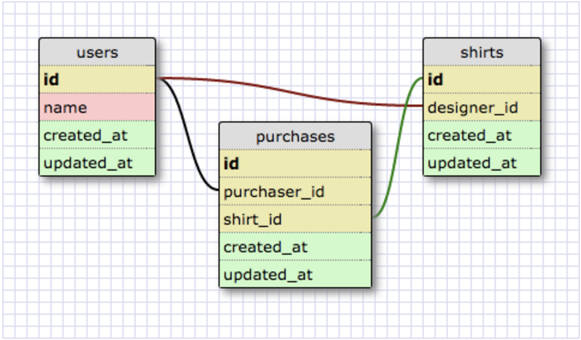

Active Record Cheat Sheet
by Jim O'Neal on February 15, 2016
ActiveRecord is a Ruby library for working with Relational SQL Databases like MySQL. It provides an Object Relational Mapping (ORM) with these core features:
- A single Ruby object maps to a database table.
- Columns are accessed by methods, and are inferred from the database schema.
- Methods for create, read, update, and delete (CRUD) are defined.
- A Domain Specific Language (DSL) for easily constructing SQL queries in Ruby.
Below are a list of common commands and notes that may be helpful to set up your Active Record database for a Ruby application.
FROM THE COMMAND LINE: (note: once gems are installed, 'be' can be substituted for 'bundle exec' in the command line)
| To install the Bundler gem: | gem install bundler |
| To install the gems listed in the Gemfile: | bundle install |
| To create the database: | bundle exec rake db:create |
| To create a model file: | bundle exec rake generate:model NAME=person |
| To create migration file: | bundle exec rake generate:migration NAME=create_people |
| To run all migration files: | bundle exec rake db:migrate |
| To populate the database with data from seed file: | bundle exec rake db:seed |
| To open the Rake console: | bundle exec rake console |
FROM THE RAKE CONSOLE (and also from any Ruby file connected to an Active Record database):
The rake console can be used to generate SQL queries via the Active Record ORM for testing your model and database table associations and relationships. Below are some examples of common commands that might be used (using a 'dogs' table and 'Dog' class as an example):
| Dog.all | Retreives all object instances of the Dog class. |
| Dog.where(age: 1) | .where is a class method that can accept a hash argument that specifies the values of specific fields on the database table. In this case, we want all the dogs whose age is 1. |
| Dog.order(age: :desc) | .order allows us to retrieve records ordered by specified attributes. :desc specifies descending order. |
| Dog.limit(2) | .limit allows us to specify a maximum number of records to return. |
| Dog.order(age: :desc) | .order allows us to retrieve records ordered by specified attributes. :desc specifies descending order. |
| Dog.count | .count returns the number of records in the database. |
| Dog.pluck(:name, :age) | .pluck allows us to retrieve just the values of specified fields. .pluck doesn't create Dog class instances, it just gives us the values you ask for. |
| Dog.first | .first returns the first record in the dogs table, ordered by primary key. Optionally, you can pass an argument to get multiple objects back (e.g., Dog.first(2)); this would return a collection. |
| Dog.find(3) | Knowing the value of its primary key (in the example, id is the primary key), we can retrieve that dog using the .find method. We can also specify an array of ID's, if we're looking for multiple records (e.g., Dog.find [1, 3]). |
| Dog.find_by(name: "Jayda") | To search for a dog with specific name use the .find_by method. .find_by is similar to .where in that we can pass it a hash of attribute values that it should match. However, .where returns a collection of all records that match the given conditions. .find_by will return a single instance, even if there are multiple matches in the database. |
| new_dog = Dog.new(name: "Bear") | Instantiating a new dog. |
| new_dog.persisted? | Asking a dog object if it's been saved. Returns true or false. |
| new_dog.save | Saving a dog to the database. |
| Dog.create(name: "Max") | .create does .new and .save in one step. Multiple dogs can be created by passing multiple hashes in an array. |
| Dog.find_or_initialize_by(license: "OH-9384764") | Find and return the dog with license OH-9384764 or instantiate an object with that license. |
| Dog.find_or_create_by(name: "Taj", license: "OH-9084736") | Find and return the dog with the name Taj and license OH-9084736 or instantiate and save an object with that name and license. |
BASIC MODEL FILE EXAMPLES:
class Guess < ActiveRecord::Base
belongs_to :user
belongs_to :card
belongs_to :round
end
class User < ActiveRecord::Base
has_many :guesses
has_many :rounds
has_many :cards, through: :guesses
has_many :decks, through: :rounds
end
BASIC MIGRATION FILE EXAMPLES:
class CreateEntries < ActiveRecord::Migration
def change
create_table :entries do |t|
t.string :title, { limit: 64, null: false }
t.text :body, { null: false }
t.timestamps(null: false)
end
end
end
class CreateGuesses < ActiveRecord::Migration
def change
create_table :guesses do |t|
t.references :user
t.references :card
t.boolean :correct?
t.timestamps(null: false)
end
end
end
COMPLEX SCHEMA, MODEL, AND MIGRATION FILE EXAMPLES:
Model Files:
class User < ActiveRecord::Base
has_many :designed_shirts, { :class_name => "Shirt", :foreign_key => :designer_id }
has_many :purchases, { :foreign_key => :purchaser_id}
has_many :purchased_shirts, { :through => :purchases, :source => :shirt}
has_many :sales, { :through => :designed_shirts}
has_many :clients, { :through => :sales, :source => :purchaser}
has_many :supported_designers, { :through => :purchased_shirts, :source => :designer}
end
class Shirt < ActiveRecord::Base
belongs_to :designer, { :class_name => "User" }
has_many :sales, { :class_name => "Purchase" }
has_many :purchasers, { :through => :sales}
end
class Purchase < ActiveRecord::Base
belongs_to :purchaser, { :class_name => "User" }
belongs_to :shirt
end
Migration Files:
class CreateUsers < ActiveRecord::Migration
def change
create_table :users do |t|
t.string :name
t.timestamps(null: false)
end
end
end
class CreateShirts < ActiveRecord::Migration
def change
create_table :shirts do |t|
t.integer :designer_id
t.timestamps(null: false)
end
end
end
class CreatePurchases < ActiveRecord::Migration
def change
create_table :purchases do |t|
t.integer :purchaser_id
t.integer :shirt_id
t.timestamps(null: false)
end
end
end